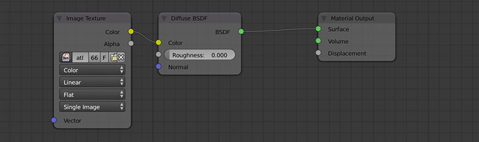
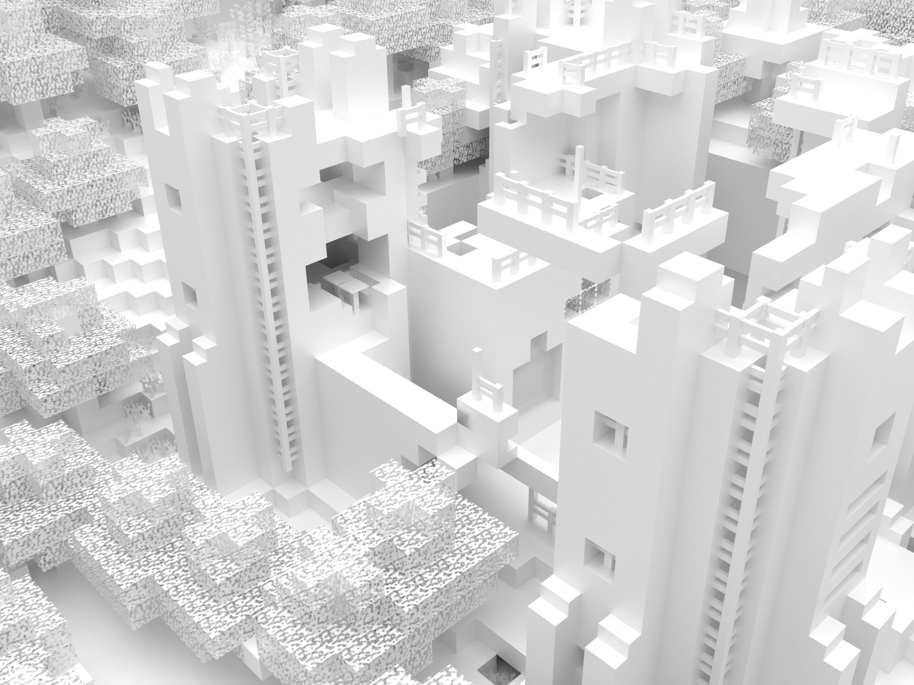

I've been having an on and off love affair with Blender for three years now. While it's true that the interface is bordering on user-hostile once you begin to understand the Blender way of doing things it is an incredibly capable piece of software.
Recently I stumbled upon Mineways, a free open-source program which allows you to export sections of your Minecraft worlds for rendering or 3D printing. Being quite a fan of Minecraft (my wife and I had our Minecraft avatars on our wedding cake) I thought I'd have a play with it and see what I could make.
I did it Mineways
The Mineways program itself is incredibly easy to use. Open up a world file, chose the maximum height and depth you would like in the final scene, ctrl-click (right-click) and drag over the section you would like to export and then export an OBJ file for rendering.

Once Mineways has finished exporting you'll be left with several files:
- An OBJ file which we'll open in Blender
- An MTL file which specifies the materials for the model
- Three PNGs of Minecraft textures in RGB, RGBA and Alpha versions
It's probably good housekeeping to put all of those files into a folder to keep everything organised and then we're ready to get into Blender.
Will it blend?
So first up you'll need to download and install Blender (the current version is 2.74 at the time of writing). Next if you are completely unfamiliar with the software I would recommend you go and make a mug to get up to speed with navigating the interface. You may also find that using a mouse makes it easier to navigate although it is possible with a multitouch trackpad (which is how I use it).
Now that you have Blender installed and you know your way around it a little lets get started. Create a new file in Blender, you should have a scene with a cube in the middle of it. Right click on the cube to select it, press "x" on the keyboard and click on the delete option that appears under your cursor. This should leave you with an empty scene ready to import your model. To import the OBJ file select File > Import > Wavefront (.obj) and then navigate to the OBJ file created by Mineways.
You should now see your model in all it's greyish beauty. To see a textured preview change the viewport shading mode to texture by pressing "alt+z" (option+z), to switch back press "z" to go to Wireframe mode and "z" again to get back to Solid mode.
Now to see how it renders we need to set up at least one light and one camera. Fortunately the default Blender scene contains a camera and a sun lamp so you should be nearly ready to go. Adjust your view by rotating, panning and zooming until you have a good view of the model. Then from the View menu at the bottom left of the panel you're working in select View > Align View > Align Active Camera to View.
Now we're ready for our first render. Select the camera icon from the panel on the right to access the render settings. Set your resolution in the panel and then press the Render button. The output may look a little like this.
My render came out particularly strangely as the world file I was working from came from a modded version of minecraft (ATlauncher). Mineways is only designed for "vanilla" (non-modified) minecraft worlds so it converts blocks it doesn't recognise into bedrock. In this case it also got confused by the variety of trees available and made some trunks out of coal ore and some leaf blocks into wood blocks.
It's fair to say that I was a little disappointed with this render but worry not things will get better. Blender has two built in renderers - the code that computes how the final image should look. Currently we are using Blender Render which is the original renderer for Blender and our other option is to use Cycles. The differences between them are many but essentially it boils down to Cycles being based on the physical world and therefore generally creating more realistic looking renders.
A new Cycle
There are definitely things we could do to improve the output in Blender Render but I'm going to suggest we jump ship to Cycles and get this render looking nice and smooth. Unfortunately however you can't just switch to Cycles and carry on rendering. You have to recreate all the textures in your scene using nodes.
For most objects you just need to create a diffuse shader that uses an image texture as an input for the colour and then assign filename-RGBA.png as the texture. You can either do this in the materials tab on the right or in the node editor.

For objects that have transparency (leaves, flowers, grass, etc.) you'll need to add a mix shader between the diffuse shader and the material output. Then you'll need to connect a transparent shader to the first shader input of the mix shader and control its factor with filename-alpha.png.
![minecraft-texture-nodes-cycles(img/minecraft-texture-nodes-cycles.jpg)
Having made those changes you should get something like this.
It takes a while to get all the materials set up and the render can take a long time (this image took about seven hours with a thousand samples) but the results speak for themselves.
If you want to increase the "realism" you can experiment with lighting and add emission shaders to textures that should be light sources. In the image below the environment is set to black, the lava is a mix of diffuse and emission shaders and there is a dim moonlight from above.
Switching to cycles won't solve any issues with incorrect or missing textures though, so for now it's probably best to stick to vanilla minecraft worlds. I'd really like to make some nice renders of the particle accelerators and nuclear power stations that my friends and I have built in the previous games so it may become the subject of a future post.
Beyond Minecraft
If you want to experiment further you can make your own textures and assign them to whichever objects you like. I tried another version using a mix shader that combined diffuse and glossy shaders to produce a material similar to a hard plastic.

I then added a plane beneath the minecraft model, scaled it so it expanded beyond the view of the camera and assigned the same texture to it. I also used a plane out of shot to the right with an emission shader to simulate the light of a soft box. The result is the bright and clean renders below.

A quick bonus
The day after I posted this I found a YouTube video that explains how to render minecraft items in Blender. It's really quick and easy to follow, best of all you can use it with cycles by creating a diffuse shader with the colour input set to the image.